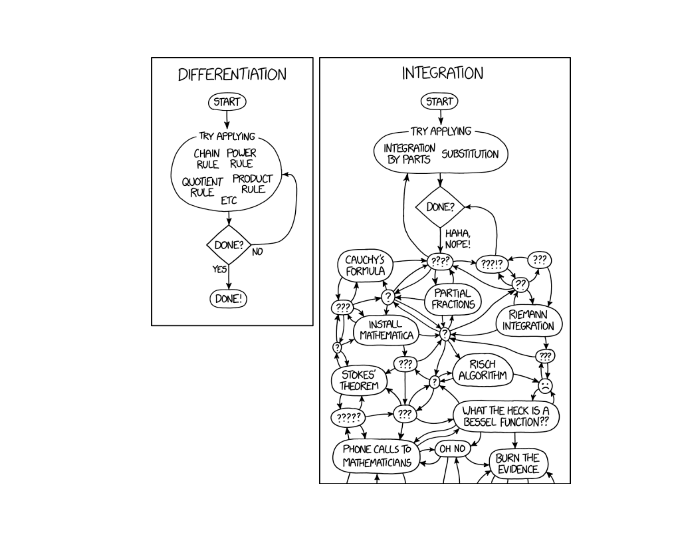
Lesson 11: Continuous Random Variables
Calendar
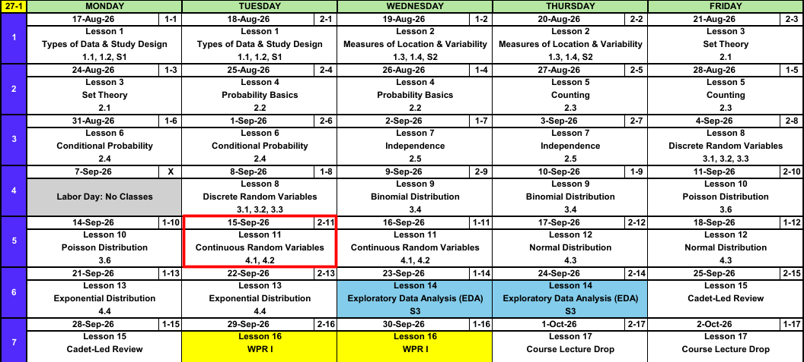
What We Did: Lessons 1 through 10
NoteReview: Data, Study Design, and Summaries (Lessons 1 and 2)
- Population vs sample, parameter (\(\mu\), \(\sigma\), \(p\)) vs statistic (\(\bar{x}\), \(s\), \(\hat{p}\)).
- Random sampling buys generalization, random assignment buys causation.
- Center: mean, median, trimmed mean. Spread: \(s^2\), \(s\), and the fourth spread \(f_s\).
NoteReview: Set Theory and Probability Basics (Lessons 3 and 4)
- Experiment, sample space \(\mathcal{S}\), event as a subset of \(\mathcal{S}\).
- Union is “or”, intersection is “and”, complement is “not”.
- Three axioms, the complement rule \(P(A') = 1 - P(A)\), and the addition rule \(P(A \cup B) = P(A) + P(B) - P(A \cap B)\).
- Equally likely outcomes: \(P(A) = N(A)/N\).
NoteReview: Counting (Lesson 5)
- Product rule: \(n_1 n_2 \cdots n_k\).
- Permutation (order matters): \(P_{k,n} = \dfrac{n!}{(n-k)!}\).
- Combination (order does not): \(\dbinom{n}{k} = \dfrac{n!}{k!\,(n-k)!}\).
NoteReview: Conditional Probability (Lesson 6)
- Conditional probability: \(P(A \mid B) = \dfrac{P(A \cap B)}{P(B)}\).
- Multiplication rule: \(P(A \cap B) = P(A \mid B)\,P(B)\).
- Law of Total Probability: \(P(B) = \sum_{i=1}^{k} P(B \mid A_i)\,P(A_i)\).
- Bayes’ Theorem flips the conditioning, and \(P(A \mid B) \ne P(B \mid A)\).
NoteReview: Independence (Lesson 7)
- Independent: \(P(A \mid B) = P(A)\), tested with \(P(A \cap B) = P(A)\,P(B)\).
- Independence collapses the conditional, multiplication, and addition rules.
- Mutually exclusive is not independent. Disjoint events are as dependent as events get.
- \(P(\text{at least one}) = 1 - P(\text{none})\), and “none” is a product under independence.
NoteReview: Discrete Random Variables (Lesson 8)
- A random variable \(X\) assigns a number to every outcome in \(\mathcal{S}\).
- pmf: \(p_X(x) = P(X = x)\), with \(p_X(x) \ge 0\) and \(\sum_x p_X(x) = 1\).
- cdf: \(F_X(x) = P(X \le x)\), a step function that jumps by \(p_X(x)\) at each value.
- For a discrete \(X\), \(\le\) and \(<\) are not interchangeable.
- Expected value \(E(X) = \sum_x x\,p_X(x)\), variance \(V(X) = E(X^2) - [E(X)]^2\).
NoteReview: Binomial Distribution (Lesson 9)
- BINS: binary, independent, number of trials fixed, same \(p\).
- pmf: \(p(x) = \dbinom{n}{x} p^x (1-p)^{n-x}\) for \(x = 0, 1, \dots, n\).
- Fully specify: \(X \sim \text{Binom}(n,\ p)\), variable, distribution, parameters.
dbinomis the pmf,pbinomis the cdf.- \(E(X) = np\) and \(V(X) = np(1-p)\).
NoteReview: Poisson Distribution (Lesson 10)
- A rate, a window, and no fixed \(n\) point to the Poisson.
- pmf: \(p(x; \mu) = \dfrac{e^{-\mu}\mu^x}{x!}\) for \(x = 0, 1, 2, \dots\), with \(\mu = \lambda t\).
- Fully specify: \(X \sim \text{Pois}(\mu)\).
dpoisis the pmf,ppoisis the cdf.- \(E(X) = V(X) = \mu\).
What We’re Doing: Lesson 11
Objectives
- Use a probability density function (pdf) to compute probabilities as areas, and recognize that any exact value has probability zero. (SLO 7)
- Obtain the cdf from the pdf and use it to find probabilities and percentiles. (SLO 7)
- Compute the expected value, variance, and standard deviation of a continuous random variable. (SLO 7)
Required Reading
Devore 4.1, 4.2
Break!
Family
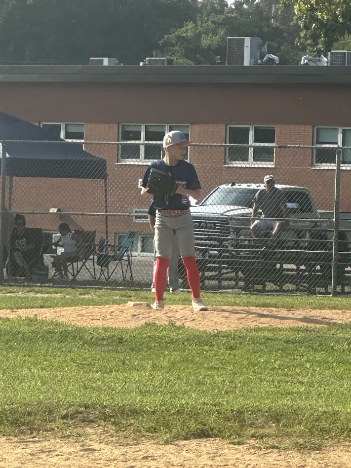
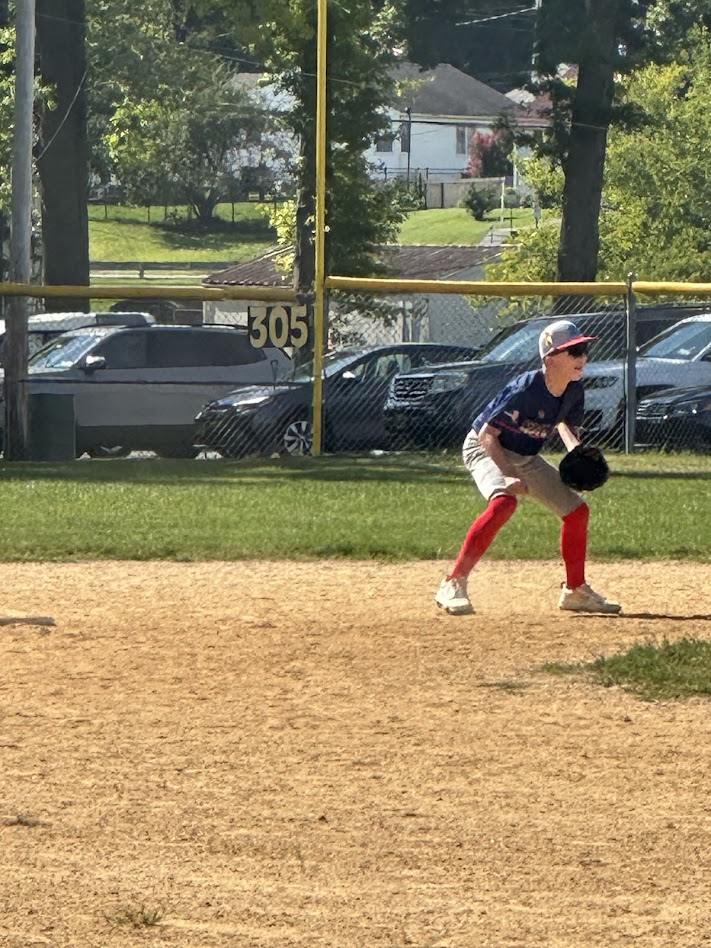
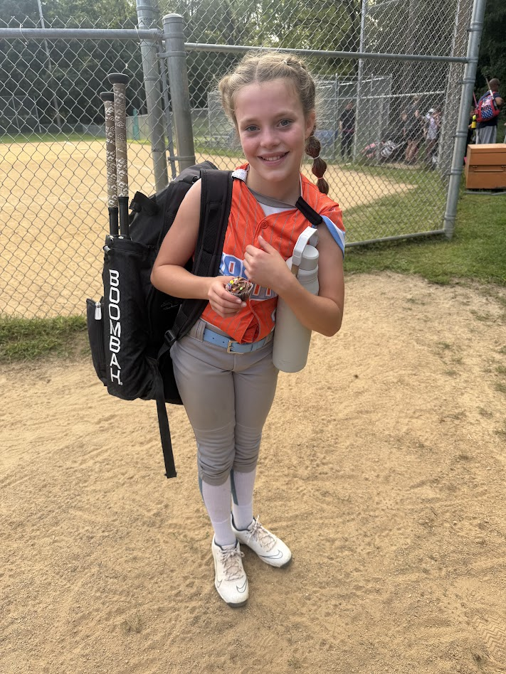
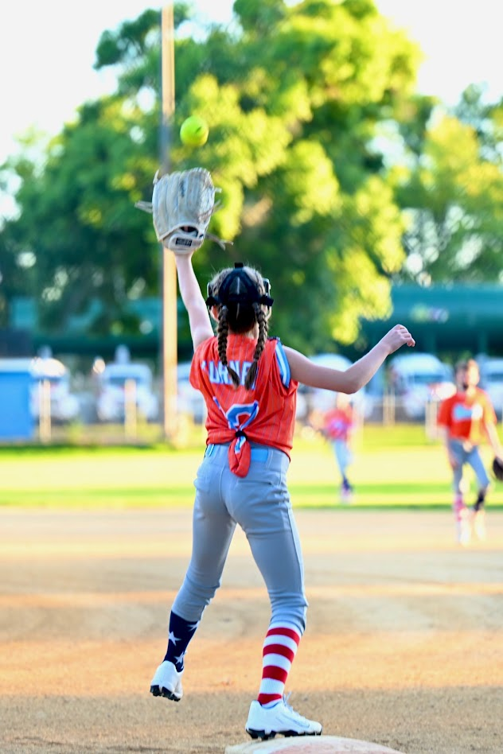
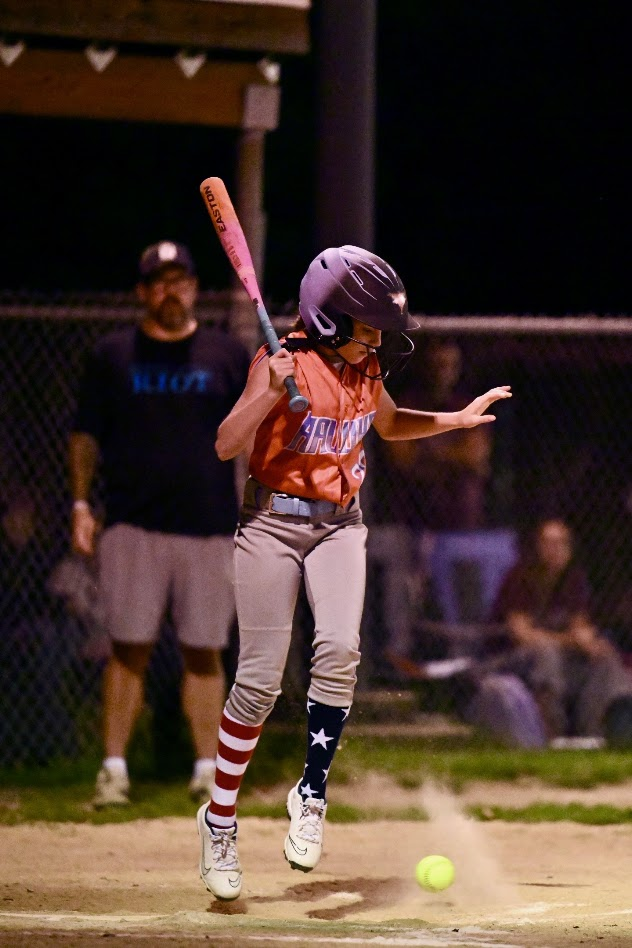
The Takeaway for Today
NoteKey Concepts from Lesson 11
- A continuous \(X\) fills an interval. Probability is area under the pdf: \(P(a \le X \le b) = \int_a^b f(x)\,dx\)
- pdf: \(f(x) \ge 0\) and \(\int_{-\infty}^{\infty} f(x)\,dx = 1\). Use the second to solve for \(k\)
- \(P(X = c) = 0\), so \(\le\) and \(<\) give the same answer
- cdf: \(F(x) = P(X \le x) = \int_{-\infty}^{x} f(y)\,dy\), and \(P(a \le X \le b) = F(b) - F(a)\)
- Percentile: solve \(F(c) = P(X \le c) = p\) for \(c\). The median \(\tilde{\mu}\) is the 50th percentile
- \(E(X) = \int x\,f(x)\,dx\) and \(V(X) = E(X^2) - [E(X)]^2\). Sums become integrals
From Discrete to Continuous
Lessons 8 through 10 Discrete: pmf You can list the values. Probability sits on each value.
\(P(a \le X \le b) = \sum_{x=a}^{b} p(x)\)
Lessons 11 through 13 Continuous: pdf The values fill an interval. Probability sits over intervals.
\(P(a \le X \le b) = \int_a^b f(x)\,dx\)
Run time, fuel remaining, wait until the next call, distance a round lands from the target.
The Probability Density Function
NoteLesson 8: Probability Mass Function (pmf)
A discrete random variable \(X\) has pmf \(p(x)\) if, for any \(a \le b\), \[P(a \le X \le b) = \sum_{x=a}^{b} p(x).\] It must satisfy two conditions: \[p(x) \ge 0 \quad \text{for all } x, \qquad \sum_{\text{all } x} p(x) = 1.\]
ImportantToday: Probability Density Function (pdf)
A continuous random variable \(X\) has pdf \(f(x)\) if, for any \(a \le b\), \[P(a \le X \le b) = \int_a^b f(x)\,dx.\] It must satisfy two conditions: \[f(x) \ge 0 \quad \text{for all } x, \qquad \int_{-\infty}^{\infty} f(x)\,dx = 1.\]
Example
\[f_X(x) = \begin{cases} \dfrac{x}{16} & 2 \le x \le 6 \\ 0 & \text{otherwise} \end{cases}\]
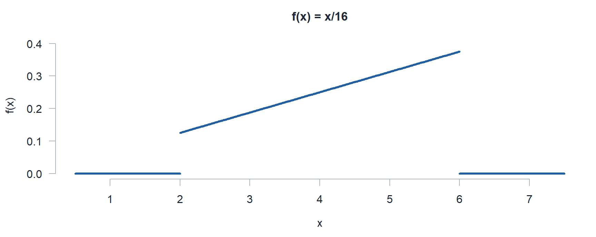
a) \(P(X < 4)\)
TipAnswer
\[P(X < 4) = \int_2^{4} \frac{x}{16}\,dx = \frac{x^2}{32} \bigg|_2^{4} = \frac{16 - 4}{32} = 0.375\]
b) \(P(X \le 4)\)
TipAnswer
\[P(X \le 4) = \int_2^{4} \frac{x}{16}\,dx = 0.375\]
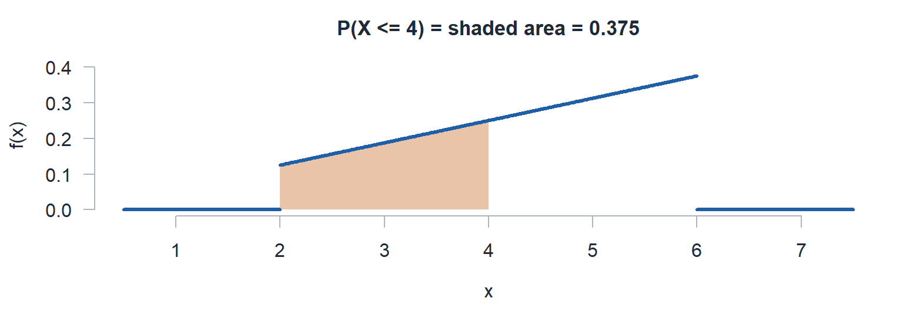
c) \(P(X > 4)\)
TipAnswer
\[P(X > 4) = \int_4^{6} \frac{x}{16}\,dx = \frac{x^2}{32} \bigg|_4^{6} = \frac{36 - 16}{32} = 0.625\]
Or from (a): \(P(X > 4) = 1 - P(X \le 4) = 1 - 0.375 = 0.625\)
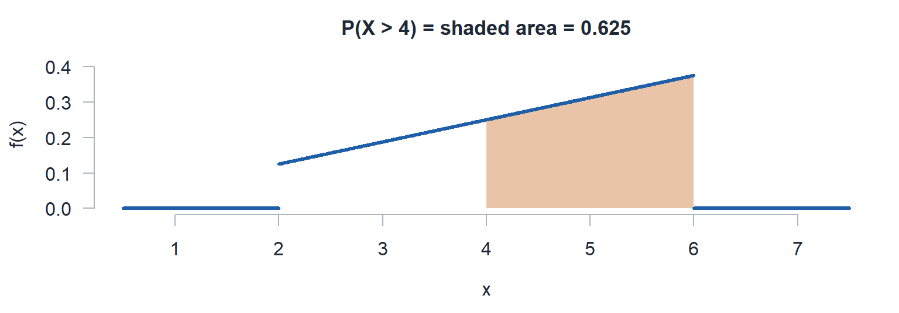
d) \(P(X \ge 4)\)
TipAnswer
\[P(X \ge 4) = \int_4^{6} \frac{x}{16}\,dx = 0.625\]
Or from (b): \(P(X \ge 4) = 1 - P(X < 4) = 1 - 0.375 = 0.625\)
e) \(P(4 < X < 7)\)
TipAnswer
\(f(x) = 0\) above \(6\), so stop the integral at \(6\).
\[P(4 < X < 7) = \int_4^{6} \frac{x}{16}\,dx + \int_6^{7} 0\,dx = \frac{36 - 16}{32} = 0.625\]
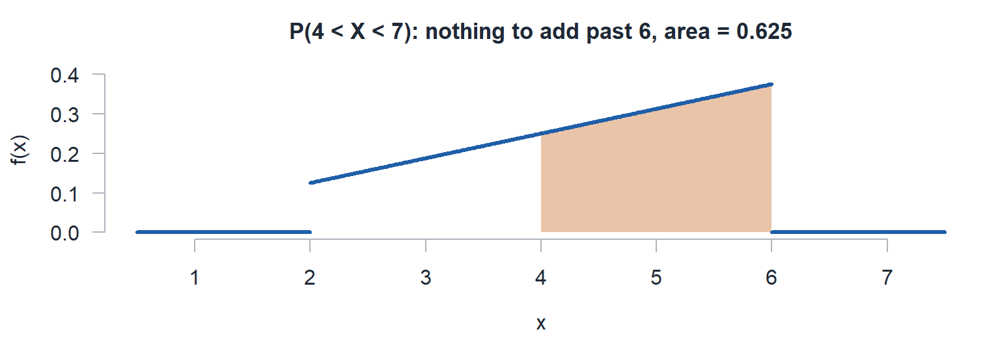
f) \(P(3 \le X \le 4)\)
TipAnswer
\[P(3 \le X \le 4) = \int_3^{4} \frac{x}{16}\,dx = \frac{x^2}{32} \bigg|_3^{4} = \frac{16 - 9}{32} = 0.21875\]
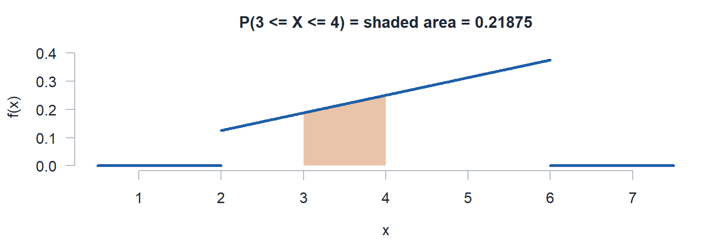
g) \(P(3 < X < 5)\)
TipAnswer
\[P(3 < X < 5) = \int_3^{5} \frac{x}{16}\,dx = \frac{x^2}{32} \bigg|_3^{5} = \frac{25 - 9}{32} = 0.5\]
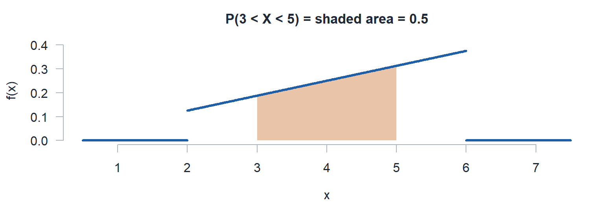
h) \(P(X = 4)\)
TipAnswer
\[P(X = 4) = \int_4^{4} \frac{x}{16}\,dx = 0\]
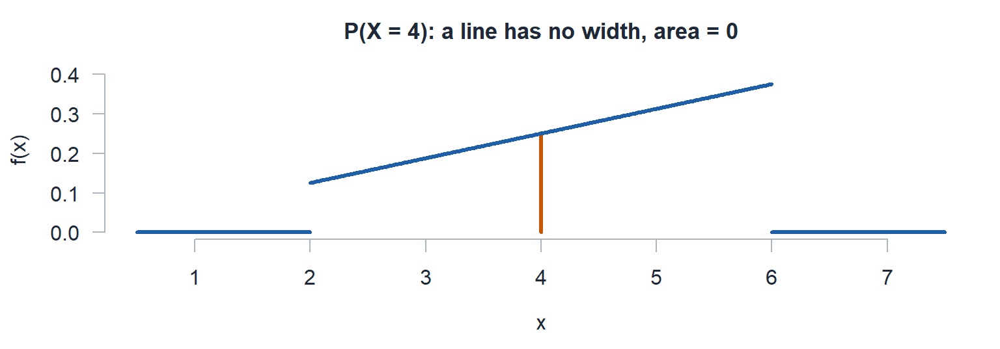
The integral over a single point has no width.
ImportantAny Exact Value Has Probability Zero
\[P(X = c) = \int_c^c f(x) \, dx = 0\] So for a continuous \(X\), \[P(a \le X \le b) = P(a < X < b) = P(a \le X < b) = P(a < X \le b).\]
Unlike Lessons 8 through 10, \(\le\) and \(<\) give the same answer.
The Cumulative Distribution Function
NoteLesson 8: cdf of a Discrete RV
The cdf of a discrete random variable \(X\) is \[F(x) = P(X \le x) = \sum_{y \,\le\, x} p(y).\]
ImportantToday: cdf of a Continuous RV
The cdf of a continuous random variable \(X\) is \[F(x) = P(X \le x) = \int_{-\infty}^{x} f(y)\,dy.\]
Fully define the cdf. Integrate the pdf from the left edge of the support.
\[F_X(x) = P(X \le x) = \int_2^x \frac{1}{16} y \, dy = \frac{y^2}{32} \bigg|_2^x = \frac{x^2 - 4}{32}\]
\[f_X(x) = \begin{cases} \dfrac{x}{16} & 2 \le x \le 6 \\ 0 & \text{otherwise} \end{cases}\]
cdf
\[F_X(x) = P(X \le x) = \begin{cases} 0 & x < 2 \\ \dfrac{x^2 - 4}{32} & 2 \le x \le 6 \\ 1 & x > 6 \end{cases}\]
All three pieces go in. \(F\) is defined for every real number.
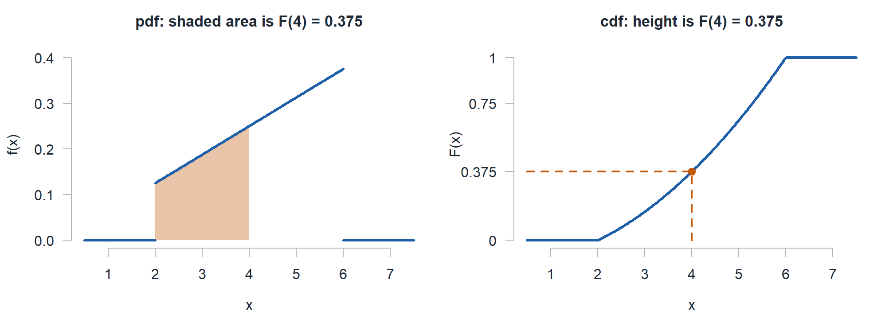
\(P(3 \le X \le 4)\) two ways.
\[\begin{aligned} \text{pdf} \quad & \int_3^{4} \frac{1}{16} x \, dx = \frac{x^2}{32} \bigg|_3^{4} = \frac{16 - 9}{32} = 0.21875 \\ \text{cdf} \quad & F(4) - F(3) = \left.\frac{x^2 - 4}{32}\right|_{x=4} - \left.\frac{x^2 - 4}{32}\right|_{x=3} = \frac{4^2 - 4}{32} - \frac{3^2 - 4}{32} = \frac{12}{32} - \frac{5}{32} = 0.21875 \end{aligned}\]
Same questions as the pdf, now off the cdf.
\[F_X(x) = P(X \le x) = \begin{cases} 0 & x < 2 \\ \dfrac{x^2 - 4}{32} & 2 \le x \le 6 \\ 1 & x > 6 \end{cases}\]
a) \(P(X < 4)\)
TipAnswer
\[P(X < 4) = P(X \le 4) = F(4) = \left.\frac{x^2 - 4}{32}\right|_{x=4} = \frac{4^2 - 4}{32} = \frac{12}{32} = 0.375\]

b) \(P(X \le 4)\)
TipAnswer
\[P(X \le 4) = F(4) = \left.\frac{x^2 - 4}{32}\right|_{x=4} = \frac{4^2 - 4}{32} = \frac{12}{32} = 0.375\]
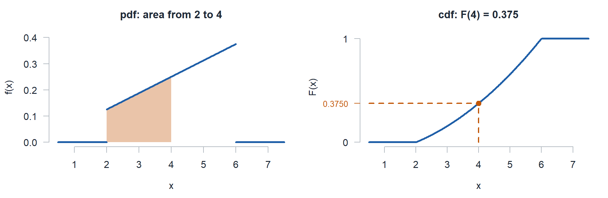
c) \(P(X > 4)\)
TipAnswer
\[P(X > 4) = 1 - P(X \le 4) = 1 - F(4) = 1 - \left.\frac{x^2 - 4}{32}\right|_{x=4} = 1 - \frac{4^2 - 4}{32} = 1 - \frac{12}{32} = 0.625\]
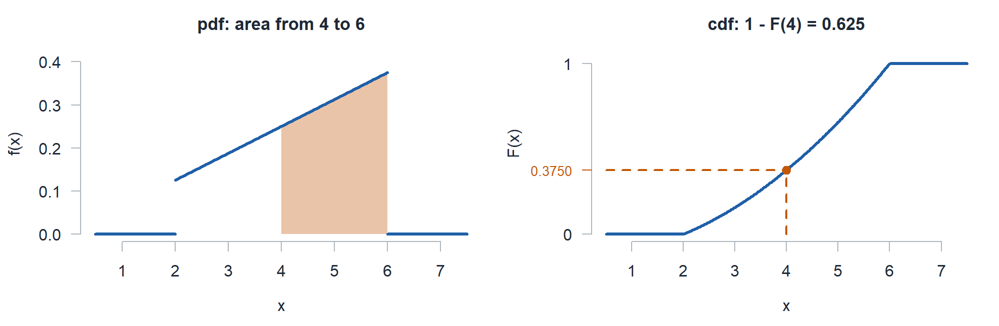
d) \(P(X \ge 4)\)
TipAnswer
\[P(X \ge 4) = 1 - P(X < 4) = 1 - F(4) = 1 - \left.\frac{x^2 - 4}{32}\right|_{x=4} = 1 - \frac{4^2 - 4}{32} = 1 - \frac{12}{32} = 0.625\]

e) \(P(4 < X < 7)\)
TipAnswer
\(7 > 6\), so \(F(7) = 1\).
\[P(4 < X < 7) = F(7) - F(4) = 1 - \left.\frac{x^2 - 4}{32}\right|_{x=4} = 1 - \frac{4^2 - 4}{32} = 1 - \frac{12}{32} = 0.625\]
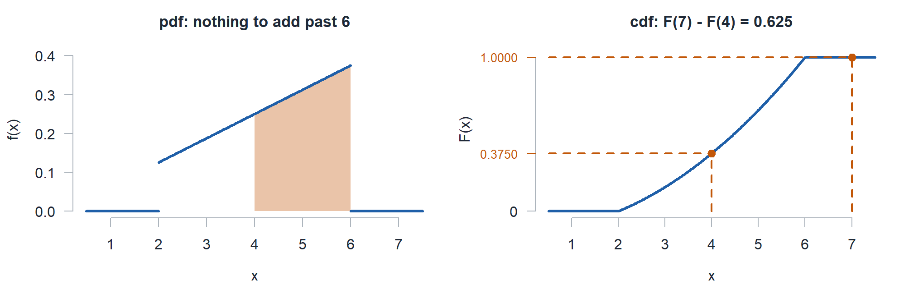
f) \(P(3 \le X \le 4)\)
TipAnswer
\[P(3 \le X \le 4) = F(4) - F(3) = \left.\frac{x^2 - 4}{32}\right|_{x=4} - \left.\frac{x^2 - 4}{32}\right|_{x=3} = \frac{4^2 - 4}{32} - \frac{3^2 - 4}{32} = \frac{12}{32} - \frac{5}{32} = 0.21875\]
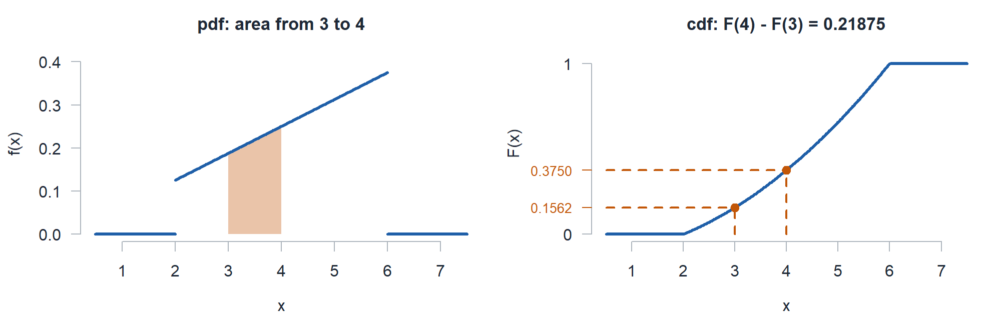
g) \(P(3 < X < 5)\)
TipAnswer
\[P(3 < X < 5) = F(5) - F(3) = \left.\frac{x^2 - 4}{32}\right|_{x=5} - \left.\frac{x^2 - 4}{32}\right|_{x=3} = \frac{5^2 - 4}{32} - \frac{3^2 - 4}{32} = \frac{21}{32} - \frac{5}{32} = 0.5\]
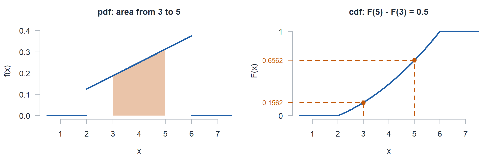
h) \(P(X = 4)\)
TipAnswer
\[P(X = 4) = F(4) - F(4) = \left.\frac{x^2 - 4}{32}\right|_{x=4} - \left.\frac{x^2 - 4}{32}\right|_{x=4} = \frac{4^2 - 4}{32} - \frac{4^2 - 4}{32} = 0\]
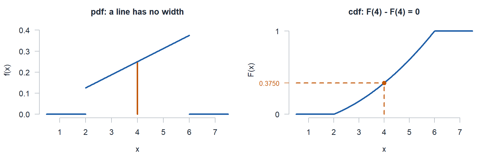
Percentiles
ImportantDefinition: Percentile
The median \(\tilde{\mu}\) satisfies \[F(\tilde{\mu}) = P(X \le \tilde{\mu}) = 0.5\] The \((100p)\)th percentile is the value \(c\) that satisfies \[F(c) = P(X \le c) = p\]
Median. Find \(\tilde{\mu}\) so that \(F(\tilde{\mu}) = P(X \le \tilde{\mu}) = 0.5\).
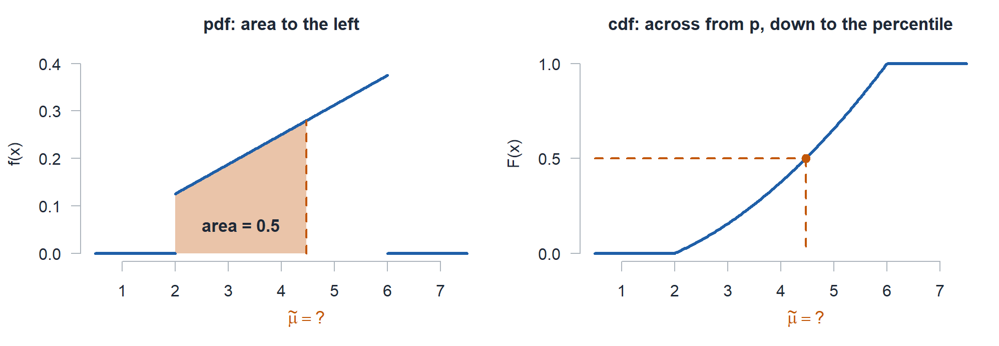
\[\begin{aligned} F(\tilde{\mu}) = P(X \le \tilde{\mu}) &= 0.5 \\ \frac{\tilde{\mu}^2 - 4}{32} &= 0.5 \\ \tilde{\mu}^2 - 4 &= 16 \\ \tilde{\mu}^2 &= 20 \\ \tilde{\mu} &= \sqrt{20} = 4.4721 \end{aligned}\]
90th percentile. Find \(c\) so that \(F(c) = P(X \le c) = 0.9\).
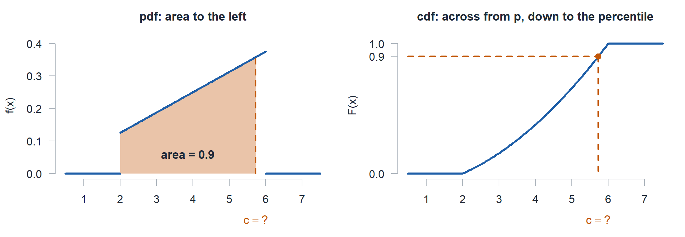
TipAnswer
\[\begin{aligned} F(c) = P(X \le c) &= 0.9 \\ \frac{c^2 - 4}{32} &= 0.9 \\ c^2 - 4 &= 28.8 \\ c^2 &= 32.8 \\ c &= \sqrt{32.8} = 5.7271 \end{aligned}\]
Expected Value and Variance
NoteLesson 8: Discrete RV
For a discrete \(X\) with lower bound \(a\) and upper bound \(b\), \[E(X) = \mu = \sum_{x=a}^{b} x\,p(x)\] \[E(X^2) = \sum_{x=a}^{b} x^2\,p(x)\] \[V(X) = \sigma^2 = E(X^2) - [E(X)]^2, \qquad \sigma = \sqrt{V(X)}\]
ImportantToday: Continuous RV
For a continuous \(X\) with lower bound \(a\) and upper bound \(b\), \[E(X) = \mu = \int_a^b x\,f(x)\,dx\] \[E(X^2) = \int_a^b x^2\,f(x)\,dx\] \[V(X) = \sigma^2 = E(X^2) - [E(X)]^2, \qquad \sigma = \sqrt{V(X)}\]
Same \(X\), \(f(x) = x/16\) on \([2, 6]\):
\[\begin{aligned} E(X) &= \int_2^6 x \cdot \frac{1}{16} x \, dx = \frac{x^3}{48} \bigg|_2^6 = \frac{216 - 8}{48} = \frac{13}{3} = 4.3333 \\ E(X^2) &= \int_2^6 x^2 \cdot \frac{1}{16} x \, dx = \frac{x^4}{64} \bigg|_2^6 = \frac{1296 - 16}{64} = 20 \\ V(X) &= E(X^2) - [E(X)]^2 = 20 - \frac{169}{9} = \frac{11}{9} = 1.2222 \\ \sigma &= \sqrt{1.2222} = 1.1055 \end{aligned}\]
The mean (\(4.3333\)) sits below the median (\(4.4721\)). The long side of this pdf is on the left.
Class Problem
\[f_X(x) = \begin{cases} \dfrac{k}{x^2} & 1 \le x \le 2 \\ 0 & \text{otherwise} \end{cases}\]
a) Find \(k\).
TipAnswer
The total area is \(1\).
\[\begin{aligned} \int_1^2 \frac{k}{x^2} \, dx &= 1 \\ -\frac{k}{x} \bigg|_1^2 &= 1 \\ -\frac{k}{2} + k &= 1 \\ \frac{k}{2} &= 1 \\ k &= 2 \end{aligned}\]
\[f_X(x) = \begin{cases} \dfrac{2}{x^2} & 1 \le x \le 2 \\ 0 & \text{otherwise} \end{cases}\]
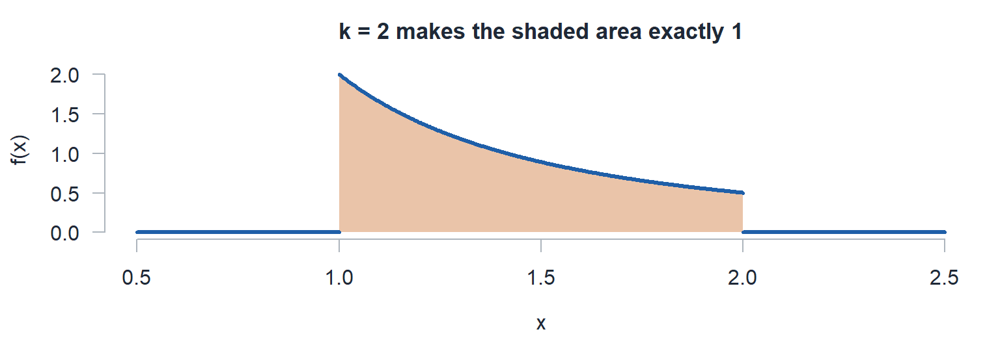
b) What is the probability \(X\) lands more than one standard deviation above the mean or more than one standard deviation below it?
TipAnswer
\[\begin{aligned} E(X) &= \int_1^2 x \cdot \frac{2}{x^2} \, dx = \int_1^2 \frac{2}{x} \, dx = 2 \ln x \bigg|_1^2 = 2 \ln 2 - 2 \ln 1 = 1.3863 \\ E(X^2) &= \int_1^2 x^2 \cdot \frac{2}{x^2} \, dx = \int_1^2 2 \, dx = 2x \bigg|_1^2 = 4 - 2 = 2 \\ V(X) &= E(X^2) - [E(X)]^2 = 2 - 1.3863^2 = 0.0782 \\ \sigma &= \sqrt{0.0782} = 0.2796 \end{aligned}\]
\[\mu \pm \sigma = 1.3863 \pm 0.2796 = (1.1067,\ 1.6659)\]
Fully define the cdf.
\[F_X(x) = P(X \le x) = \int_1^x \frac{2}{y^2} \, dy = -\frac{2}{y} \bigg|_1^x = 2 - \frac{2}{x}\]
\[F_X(x) = P(X \le x) = \begin{cases} 0 & x < 1 \\ 2 - \dfrac{2}{x} & 1 \le x \le 2 \\ 1 & x > 2 \end{cases}\]
\[P(X < 1.1067) + P(X > 1.6659) = F(1.1067) + 1 - F(1.6659)\]
\[= \left.2 - \frac{2}{x}\right|_{x=1.1067} + 1 - \left(\left.2 - \frac{2}{x}\right|_{x=1.6659}\right)\]
\[= \left(2 - \frac{2}{1.1067}\right) + 1 - \left(2 - \frac{2}{1.6659}\right) = 0.1928 + 0.2005 = \mathbf{0.3933}\]
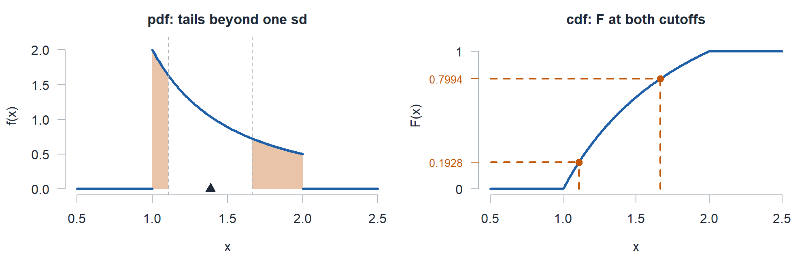
The endpoints carry zero probability.
Board Problems
Problem 1: Start From the pdf
\[f(x) = \begin{cases} \dfrac{1}{2\sqrt{x}} & 1 \le x \le 4 \\ 0 & \text{otherwise} \end{cases}\]
NoteQuestions
Fully define the cdf.
Find each: \(P(X = 2)\), \(P(X < 2)\), \(P(X \le 2)\), \(P(X > 3)\), \(P(X \ge 3)\), and \(P(2 \le X \le 3)\).
Find the median and the 90th percentile.
Find \(E(X)\), \(V(X)\), and \(\sigma\), then find the probability \(X\) lands more than one standard deviation above or below the mean.
TipAnswers
- \[F(x) = P(X \le x) = \int_1^x \frac{1}{2\sqrt{y}}\,dy = \sqrt{y} \bigg|_1^x = \sqrt{x} - 1, \qquad F(x) = P(X \le x) = \begin{cases} 0 & x < 1 \\ \sqrt{x} - 1 & 1 \le x \le 4 \\ 1 & x > 4 \end{cases}\]
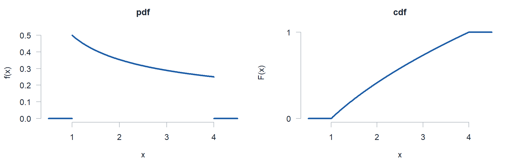
\[\begin{aligned} P(X = 2) &= F(2) - F(2) = 0 \\ P(X < 2) &= P(X \le 2) = F(2) = \left.\left(\sqrt{x} - 1\right)\right|_{x=2} = \sqrt{2} - 1 = \mathbf{0.4142} \\ P(X \le 2) &= F(2) = \left.\left(\sqrt{x} - 1\right)\right|_{x=2} = \sqrt{2} - 1 = \mathbf{0.4142} \\ P(X > 3) &= 1 - F(3) = 1 - \left.\left(\sqrt{x} - 1\right)\right|_{x=3} = 1 - \left(\sqrt{3} - 1\right) = \mathbf{0.2679} \\ P(X \ge 3) &= 1 - P(X < 3) = 1 - F(3) = 1 - \left.\left(\sqrt{x} - 1\right)\right|_{x=3} = 1 - \left(\sqrt{3} - 1\right) = \mathbf{0.2679} \\ P(2 \le X \le 3) &= F(3) - F(2) = \left.\left(\sqrt{x} - 1\right)\right|_{x=3} - \left.\left(\sqrt{x} - 1\right)\right|_{x=2} = \left(\sqrt{3} - 1\right) - \left(\sqrt{2} - 1\right) = \mathbf{0.3178} \end{aligned}\]
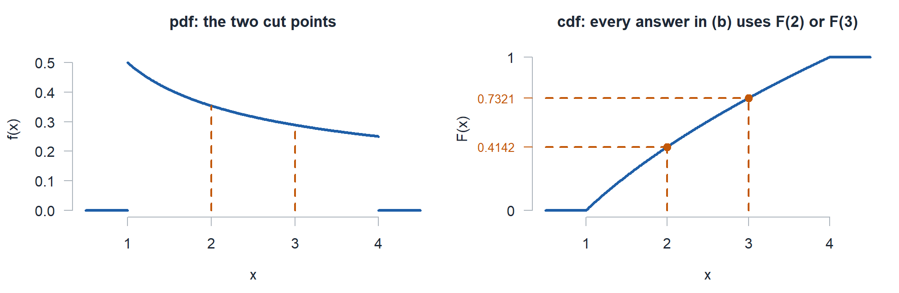
- Median. Find \(\tilde{\mu}\) so that \(F(\tilde{\mu}) = P(X \le \tilde{\mu}) = 0.5\).
\[\begin{aligned} F(\tilde{\mu}) = P(X \le \tilde{\mu}) &= 0.5 \\ \sqrt{\tilde{\mu}} - 1 &= 0.5 \\ \sqrt{\tilde{\mu}} &= 1.5 \\ \tilde{\mu} &= 1.5^2 = \mathbf{2.25} \end{aligned}\]
90th percentile. Find \(c\) so that \(F(c) = P(X \le c) = 0.9\).
\[\begin{aligned} F(c) = P(X \le c) &= 0.9 \\ \sqrt{c} - 1 &= 0.9 \\ \sqrt{c} &= 1.9 \\ c &= 1.9^2 = \mathbf{3.61} \end{aligned}\]
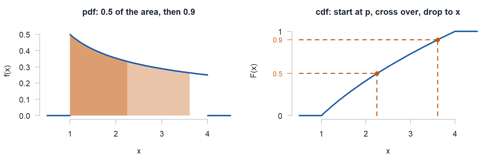
\[\begin{aligned} E(X) &= \int_1^4 x \cdot \frac{1}{2\sqrt{x}}\,dx = \int_1^4 \frac{x^{1/2}}{2}\,dx = \frac{x^{3/2}}{3} \bigg|_1^4 = \frac{8 - 1}{3} = \frac{7}{3} = 2.3333 \\ E(X^2) &= \int_1^4 x^2 \cdot \frac{1}{2\sqrt{x}}\,dx = \int_1^4 \frac{x^{3/2}}{2}\,dx = \frac{x^{5/2}}{5} \bigg|_1^4 = \frac{32 - 1}{5} = 6.2 \\ V(X) &= E(X^2) - [E(X)]^2 = 6.2 - \left(\frac{7}{3}\right)^2 = 0.7556 \\ \sigma &= \sqrt{0.7556} = 0.8692 \end{aligned}\]
\(\mu \pm \sigma = 2.3333 \pm 0.8692 = (1.4641,\ 3.2026)\).
\[P(X < 1.4641) + P(X > 3.2026) = F(1.4641) + 1 - F(3.2026)\]
\[= \left.\left(\sqrt{x} - 1\right)\right|_{x=1.4641} + 1 - \left.\left(\sqrt{x} - 1\right)\right|_{x=3.2026}\]
\[= \left(\sqrt{1.4641} - 1\right) + 1 - \left(\sqrt{3.2026} - 1\right) = 0.2100 + 0.2104 = \mathbf{0.4204}\]
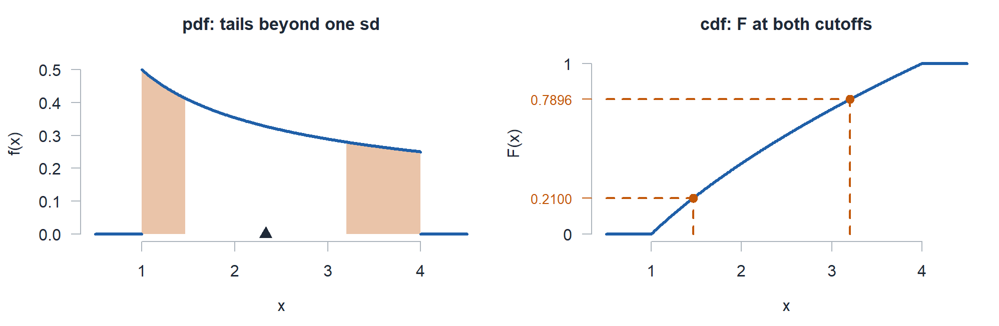
Problem 2: Two Mile Run
A cadet company’s two mile run times, in minutes, follow
\[f(x) = \begin{cases} \dfrac{16 - x}{8} & 12 \le x \le 16 \\ 0 & \text{otherwise} \end{cases}\]
NoteQuestions
Verify \(f\) is a legal pdf.
Fully define the cdf.
Find \(P(X \le 13)\), \(P(X > 14)\), and \(P(13.5 \le X \le 15)\).
Find the median run time.
Find \(E(X)\), \(V(X)\), and \(\sigma\), then find the probability a run time lands more than one standard deviation above or below the mean.
TipAnswers
- \(f(x) \ge 0\) on \([12, 16]\), and
\[\int_{12}^{16} \frac{16 - x}{8}\,dx = -\frac{(16 - x)^2}{16} \bigg|_{12}^{16} = 0 + \frac{16}{16} = 1\]
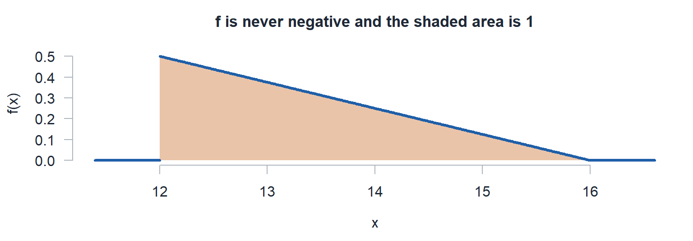
- \[F(x) = P(X \le x) = \int_{12}^{x} \frac{16 - y}{8}\,dy = 1 - \frac{(16 - x)^2}{16}, \qquad F(x) = P(X \le x) = \begin{cases} 0 & x < 12 \\ 1 - \dfrac{(16 - x)^2}{16} & 12 \le x \le 16 \\ 1 & x > 16 \end{cases}\]
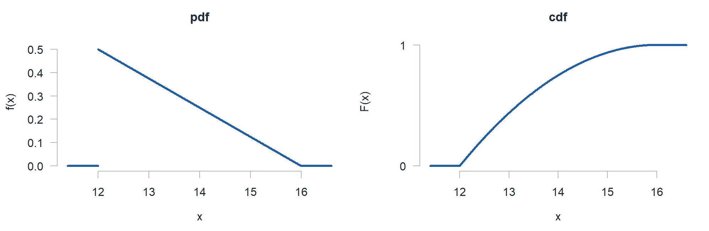
\[\begin{aligned} P(X \le 13) &= F(13) = \left.1 - \frac{(16 - x)^2}{16}\right|_{x=13} = 1 - \frac{(16 - 13)^2}{16} = 1 - \frac{9}{16} = \mathbf{0.4375} \\ P(X > 14) &= 1 - F(14) = 1 - \left(\left.1 - \frac{(16 - x)^2}{16}\right|_{x=14}\right) = 1 - \left(1 - \frac{(16 - 14)^2}{16}\right) = 1 - \frac{12}{16} = \mathbf{0.25} \\ P(13.5 \le X \le 15) &= F(15) - F(13.5) = \left.1 - \frac{(16 - x)^2}{16}\right|_{x=15} - \left.1 - \frac{(16 - x)^2}{16}\right|_{x=13.5} \\ &= \left(1 - \frac{(16 - 15)^2}{16}\right) - \left(1 - \frac{(16 - 13.5)^2}{16}\right) = \frac{15}{16} - \frac{9.75}{16} = \mathbf{0.3281} \end{aligned}\]
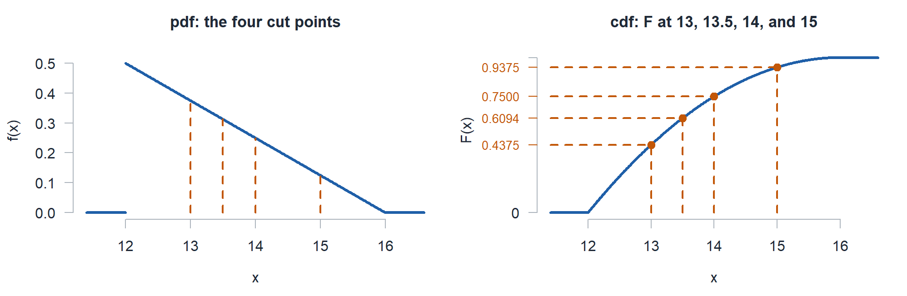
- Median. Find \(\tilde{\mu}\) so that \(F(\tilde{\mu}) = P(X \le \tilde{\mu}) = 0.5\).
\[\begin{aligned} F(\tilde{\mu}) = P(X \le \tilde{\mu}) &= 0.5 \\ 1 - \frac{(16 - \tilde{\mu})^2}{16} &= 0.5 \\ \frac{(16 - \tilde{\mu})^2}{16} &= 0.5 \\ (16 - \tilde{\mu})^2 &= 8 \\ 16 - \tilde{\mu} &= \sqrt{8} \\ \tilde{\mu} &= 16 - \sqrt{8} = \mathbf{13.1716} \text{ minutes} \end{aligned}\]
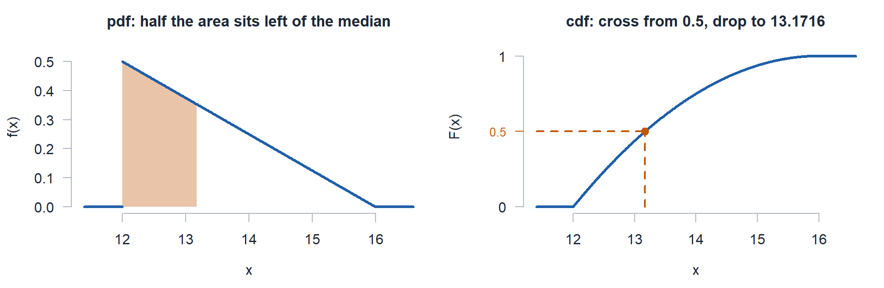
Take the positive root. \(\tilde{\mu}\) has to sit inside \([12, 16]\).
\[\begin{aligned} E(X) &= \int_{12}^{16} x \cdot \frac{16 - x}{8}\,dx = \frac{40}{3} = 13.3333 \\ E(X^2) &= \int_{12}^{16} x^2 \cdot \frac{16 - x}{8}\,dx = \frac{536}{3} = 178.6667 \\ V(X) &= \frac{536}{3} - \left(\frac{40}{3}\right)^2 = \frac{8}{9} = 0.8889 \\ \sigma &= 0.9428 \text{ minutes} \end{aligned}\]
\(\mu \pm \sigma = (12.3905,\ 14.2761)\).
\[P(X < 12.3905) + P(X > 14.2761) = F(12.3905) + 1 - F(14.2761)\]
\[= \left.1 - \frac{(16 - x)^2}{16}\right|_{x=12.3905} + 1 - \left(\left.1 - \frac{(16 - x)^2}{16}\right|_{x=14.2761}\right)\]
\[= \left(1 - \frac{3.6095^2}{16}\right) + \frac{1.7239^2}{16} = 0.1857 + 0.1857 = \mathbf{0.3715}\]
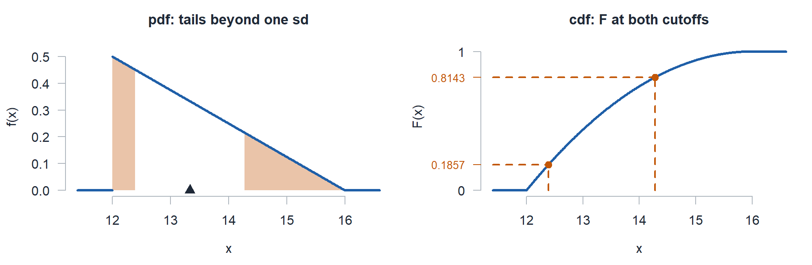
Problem 3: Sentry Duty
A supply truck is equally likely to arrive at any point in a sentry’s \(4\) hour shift. Let \(X\) be the hours until it arrives.
\[f(x) = \begin{cases} \dfrac{1}{4} & 0 \le x \le 4 \\ 0 & \text{otherwise} \end{cases}\]
NoteQuestions
Fully define the cdf.
Find \(P(X \le 1)\), \(P(1 < X < 3)\), and \(P(X = 2)\).
By what time has the truck arrived with probability \(0.8\)?
Find \(E(X)\) and \(\sigma\), then find the probability \(X\) lands more than one standard deviation above or below the mean.
The truck has not arrived after \(1\) hour. What is the probability it takes at least \(3\)?
TipAnswers
- \[F(x) = P(X \le x) = \begin{cases} 0 & x < 0 \\ \dfrac{x}{4} & 0 \le x \le 4 \\ 1 & x > 4 \end{cases}\]
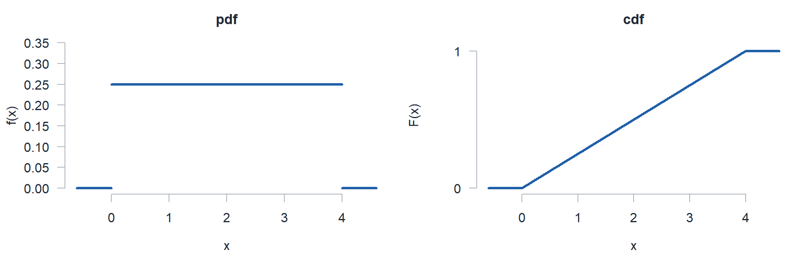
\[\begin{aligned} P(X \le 1) &= F(1) = \left.\frac{x}{4}\right|_{x=1} = \frac{1}{4} = \mathbf{0.25} \\ P(1 < X < 3) &= F(3) - F(1) = \left.\frac{x}{4}\right|_{x=3} - \left.\frac{x}{4}\right|_{x=1} = \frac{3}{4} - \frac{1}{4} = \mathbf{0.5} \\ P(X = 2) &= F(2) - F(2) = \mathbf{0} \end{aligned}\]
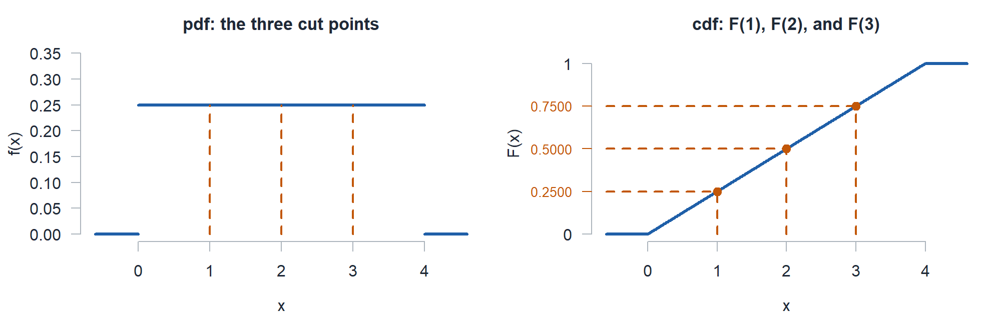
- Find \(c\) so that \(F(c) = P(X \le c) = 0.8\).
\[\begin{aligned} F(c) = P(X \le c) &= 0.8 \\ \frac{c}{4} &= 0.8 \\ c &= \mathbf{3.2} \text{ hours} \end{aligned}\]
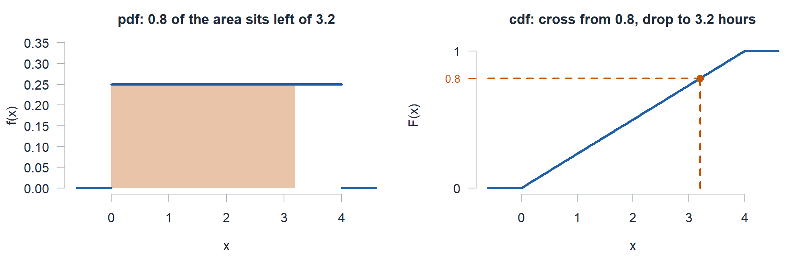
\[\begin{aligned} E(X) &= \int_0^4 \frac{x}{4}\,dx = \frac{x^2}{8} \bigg|_0^4 = 2 \\ E(X^2) &= \int_0^4 \frac{x^2}{4}\,dx = \frac{x^3}{12} \bigg|_0^4 = \frac{16}{3} \\ V(X) &= \frac{16}{3} - 4 = \frac{4}{3}, \qquad \sigma = 1.1547 \end{aligned}\]
\(\mu \pm \sigma = (0.8453,\ 3.1547)\).
\[P(X < 0.8453) + P(X > 3.1547) = F(0.8453) + 1 - F(3.1547)\]
\[= \left.\frac{x}{4}\right|_{x=0.8453} + 1 - \left.\frac{x}{4}\right|_{x=3.1547} = \frac{0.8453}{4} + 1 - \frac{3.1547}{4} = 0.2113 + 0.2113 = \mathbf{0.4226}\]
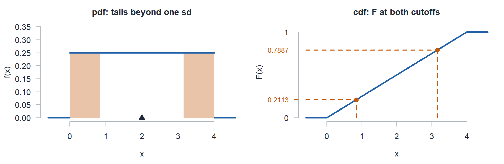
- Lesson 6. \(\{X \ge 3\}\) sits inside \(\{X \ge 1\}\).
\[P(X \ge 3 \mid X \ge 1) = \frac{P(X \ge 3)}{P(X \ge 1)} = \frac{1 - F(3)}{1 - F(1)} = \frac{1 - \left.\frac{x}{4}\right|_{x=3}}{1 - \left.\frac{x}{4}\right|_{x=1}} = \frac{1 - \frac{3}{4}}{1 - \frac{1}{4}} = \frac{1/4}{3/4} = \mathbf{0.3333}\]
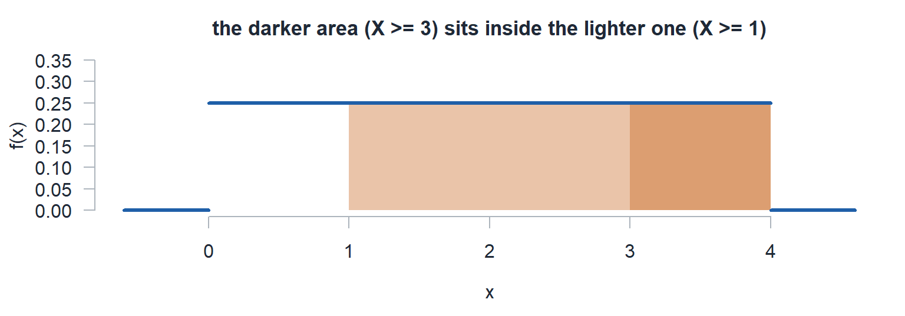
Problem 4: Reading the cdf
\(X\) is the fraction of a fuel tank a vehicle burns on a patrol. You are handed only the cdf:
\[F(x) = P(X \le x) = \begin{cases} 0 & x < 0 \\ 3x^2 - 2x^3 & 0 \le x \le 1 \\ 1 & x > 1 \end{cases}\]
NoteQuestions
Recover the pdf.
Find \(P(X > 0.7)\) and \(P(0.25 \le X \le 0.75)\).
Find the median.
Find \(E(X)\) and \(\sigma\).
TipAnswers
- Differentiate.
\[f(x) = F'(x) = \begin{cases} 6x - 6x^2 & 0 \le x \le 1 \\ 0 & \text{otherwise} \end{cases}\]
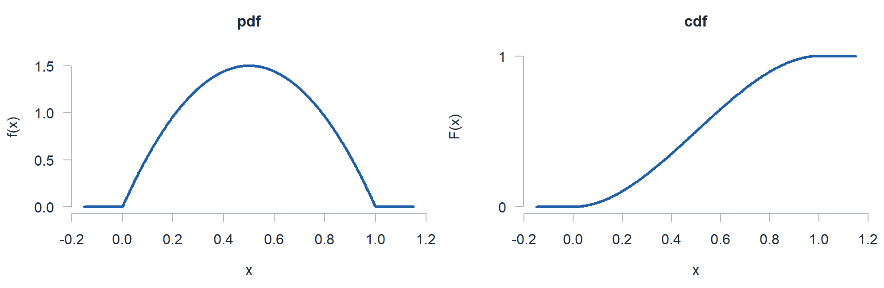
\[\begin{aligned} P(X > 0.7) &= 1 - F(0.7) = 1 - \left.\left(3x^2 - 2x^3\right)\right|_{x=0.7} = 1 - \left(3(0.7)^2 - 2(0.7)^3\right) = 1 - (1.47 - 0.686) = \mathbf{0.216} \\ P(0.25 \le X \le 0.75) &= F(0.75) - F(0.25) = \left.\left(3x^2 - 2x^3\right)\right|_{x=0.75} - \left.\left(3x^2 - 2x^3\right)\right|_{x=0.25} \\ &= \left(3(0.75)^2 - 2(0.75)^3\right) - \left(3(0.25)^2 - 2(0.25)^3\right) = 0.84375 - 0.15625 = \mathbf{0.6875} \end{aligned}\]
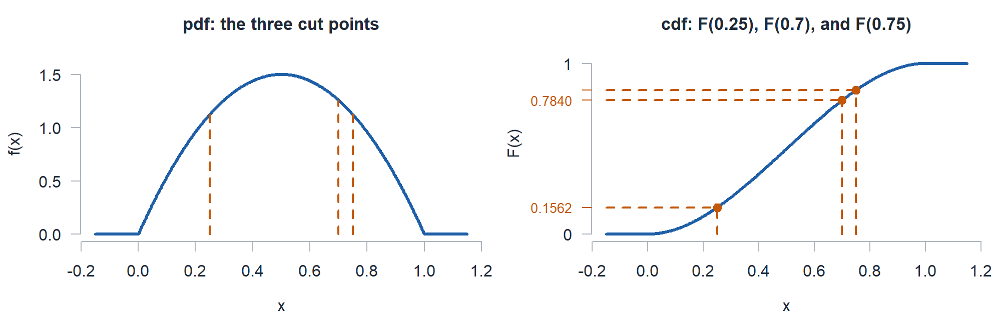
- Find \(\tilde{\mu}\) so that \(F(\tilde{\mu}) = P(X \le \tilde{\mu}) = 0.5\).
\[\begin{aligned} F(\tilde{\mu}) = P(X \le \tilde{\mu}) &= 0.5 \\ 3\tilde{\mu}^2 - 2\tilde{\mu}^3 &= 0.5 \end{aligned}\]
A cubic, so check the middle of the support. The pdf \(6x - 6x^2\) is symmetric about \(0.5\).
\[\left.\left(3x^2 - 2x^3\right)\right|_{x=0.5} = 3(0.5)^2 - 2(0.5)^3 = 0.75 - 0.25 = 0.5, \qquad \tilde{\mu} = \mathbf{0.5}\]
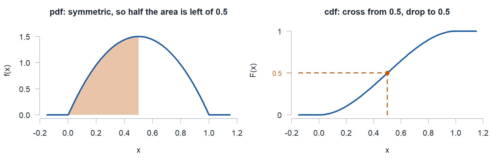
\[\begin{aligned} E(X) &= \int_0^1 x(6x - 6x^2)\,dx = \left[2x^3 - \tfrac{3}{2}x^4\right]_0^1 = 0.5 \\ E(X^2) &= \int_0^1 x^2(6x - 6x^2)\,dx = \left[\tfrac{3}{2}x^4 - \tfrac{6}{5}x^5\right]_0^1 = 0.3 \\ V(X) &= 0.3 - 0.25 = 0.05, \qquad \sigma = 0.2236 \end{aligned}\]
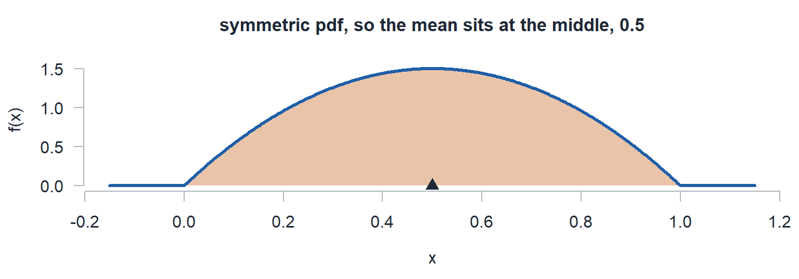
Problem 5: Stretch
\(X\) is the hours a generator runs before it faults. Every generator runs at least \(1\) hour. Its cdf is
\[F(x) = P(X \le x) = \begin{cases} 0 & x < 1 \\ 1 - \dfrac{1}{x^2} & x \ge 1 \end{cases}\]
NoteQuestions
Find the pdf.
Find \(P(X > 2)\) and \(P(2 < X \le 4)\).
Find the median and the 90th percentile.
Find \(E(X)\).
Find \(V(X)\).
TipAnswers
- \(f(x) = F'(x) = \dfrac{2}{x^3}\) for \(x \ge 1\), and \(0\) otherwise.
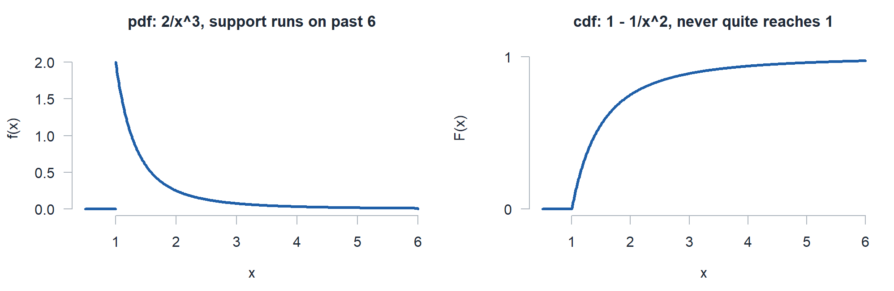
\[\begin{aligned} P(X > 2) &= 1 - F(2) = 1 - \left(\left.1 - \frac{1}{x^2}\right|_{x=2}\right) = 1 - \left(1 - \frac{1}{2^2}\right) = \frac{1}{4} = \mathbf{0.25} \\ P(2 < X \le 4) &= F(4) - F(2) = \left.1 - \frac{1}{x^2}\right|_{x=4} - \left.1 - \frac{1}{x^2}\right|_{x=2} = \left(1 - \frac{1}{4^2}\right) - \left(1 - \frac{1}{2^2}\right) = \frac{15}{16} - \frac{3}{4} = \mathbf{0.1875} \end{aligned}\]
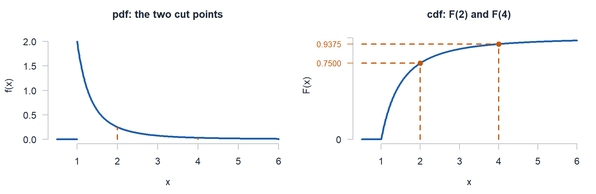
- Median. Find \(\tilde{\mu}\) so that \(F(\tilde{\mu}) = P(X \le \tilde{\mu}) = 0.5\).
\[\begin{aligned} F(\tilde{\mu}) = P(X \le \tilde{\mu}) &= 0.5 \\ 1 - \frac{1}{\tilde{\mu}^2} &= 0.5 \\ \frac{1}{\tilde{\mu}^2} &= 0.5 \\ \tilde{\mu}^2 &= 2 \\ \tilde{\mu} &= \sqrt{2} = \mathbf{1.4142} \end{aligned}\]
90th percentile. Find \(c\) so that \(F(c) = P(X \le c) = 0.9\).
\[\begin{aligned} F(c) = P(X \le c) &= 0.9 \\ 1 - \frac{1}{c^2} &= 0.9 \\ \frac{1}{c^2} &= 0.1 \\ c^2 &= 10 \\ c &= \sqrt{10} = \mathbf{3.1623} \end{aligned}\]
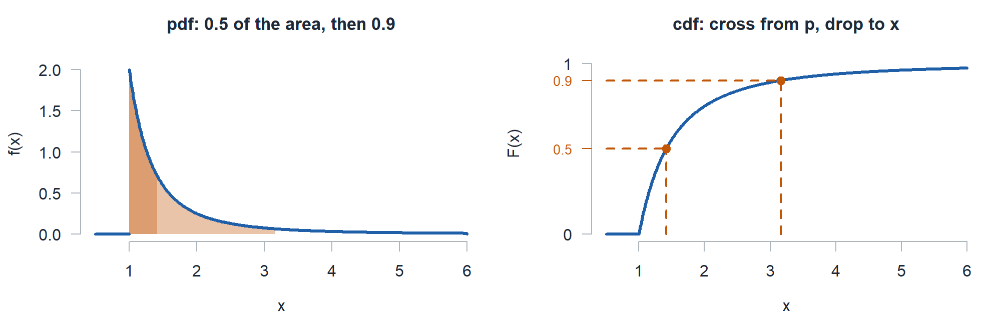
- \[E(X) = \int_1^{\infty} x \cdot \frac{2}{x^3}\,dx = \int_1^{\infty} \frac{2}{x^2}\,dx = -\frac{2}{x} \bigg|_1^{\infty} = \mathbf{2}\]
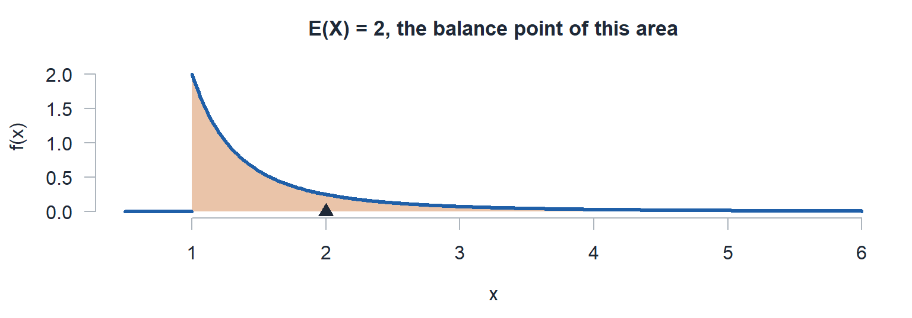
- \[E(X^2) = \int_1^{\infty} x^2 \cdot \frac{2}{x^3}\,dx = \int_1^{\infty} \frac{2}{x}\,dx = 2 \ln x \bigg|_1^{\infty} = \infty\]
\(E(X^2)\) diverges, so \(V(X)\) is infinite. The mean exists, the variance does not.
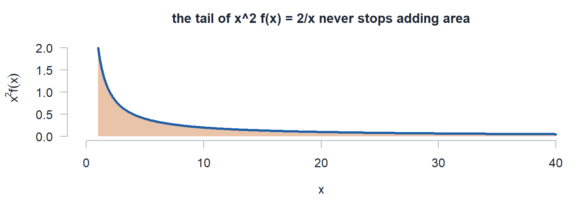
Before You Leave
Today
- Probability for a continuous \(X\) is area under the pdf
- Total area \(1\) pins down \(k\)
- \(P(X = c) = 0\), so endpoints do not matter
- The cdf turns every probability into \(F(b) - F(a)\), and percentiles into solving \(F(c) = p\)
- \(E(X)\) and \(V(X)\) are the Lesson 8 formulas with integrals
Any questions?
Next Lesson
Lesson 12: Normal Distribution
- Identify the normal and standard normal (\(z\)) distributions
- Standardize values with \(z = (x-\mu)/\sigma\) and compute probabilities using the \(z\) table
- Determine percentiles and \(z\) critical values for the normal distribution
Reading: Devore 4.3
Upcoming Graded Events
- WebAssign 4.1, 4.2 - Due at the start of Lesson 12
- WPR I - Lesson 16 (covers Lessons 1-13)
- TEE - 15-18 Dec 2026